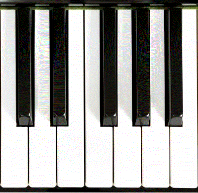

<h1>Découvertes</h1>


<!--map image-->




<map name="mapImage" >
<area id="C" alt="do" title="C" href="https://www.spotify.com/be-fr/" shape="rect" coords="4,251,56,378" style="outline:none;" target="_self"     />
<area id="D" alt="ré" title="D" href="https://soundcloud.com/discover" shape="rect" coords="54,252,111,374" style="outline:none;" target="_self"     />
<area id="E" alt="mi" title="E" href="https://www.discogs.com/" shape="rect" coords="115,253,172,382" style="outline:none;" target="_self"     />
<area id="F" alt="fa" title="F" href="https://www.deezer.com/fr/channels/explore" shape="rect" coords="172,254,229,383" style="outline:none;" target="_self"     />
<area id="G" alt="sol" title="G" href="https://www.radio.fr/" shape="rect" coords="228,253,283,377" style="outline:none;" target="_self"     />
<area id="A" alt="la" title="A" href="https://www.last.fm/fr/" shape="rect" coords="287,254,340,378" style="outline:none;" target="_self"     />
<area id="B" alt="si" title="B" href="https://tidal.com/" shape="rect" coords="344,255,397,379" style="outline:none;" target="_self"     /> 
</map>
  